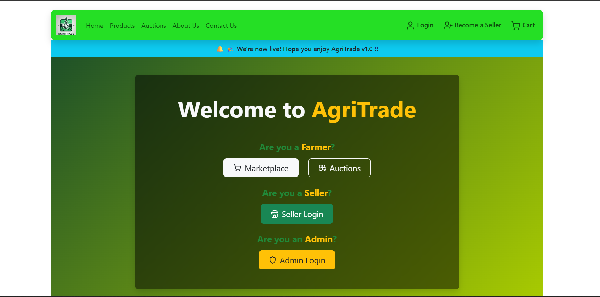
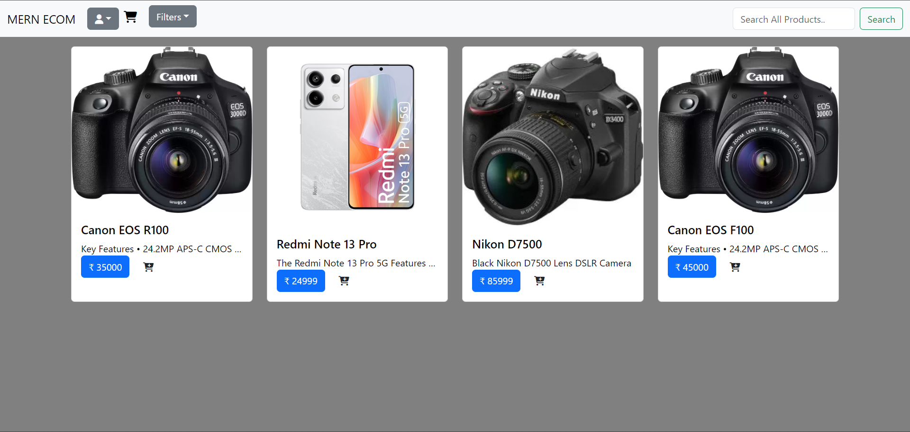
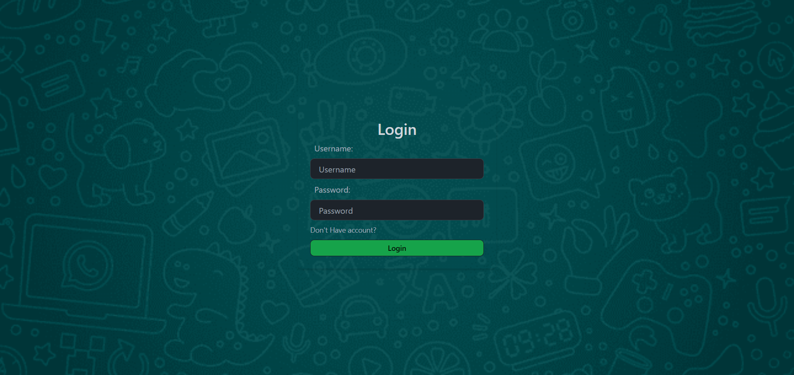
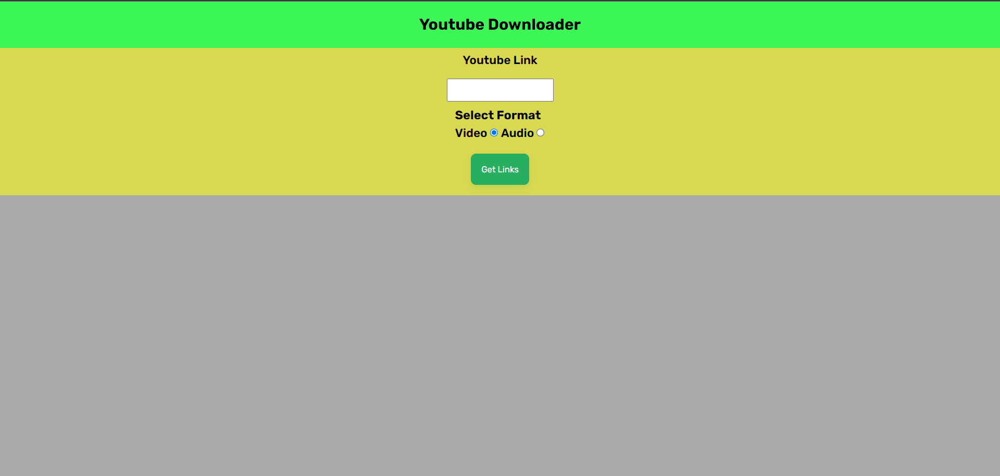
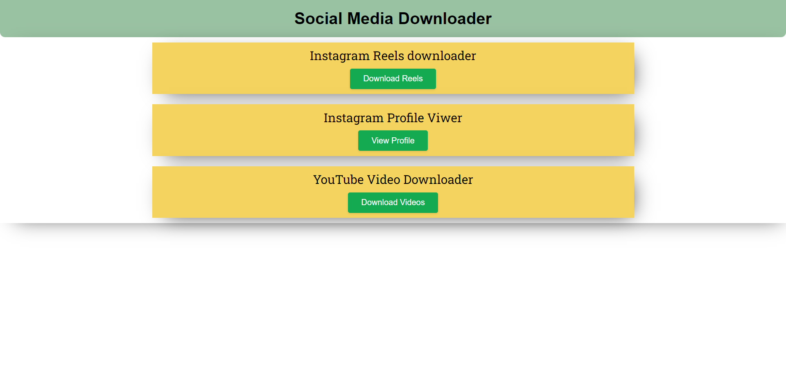
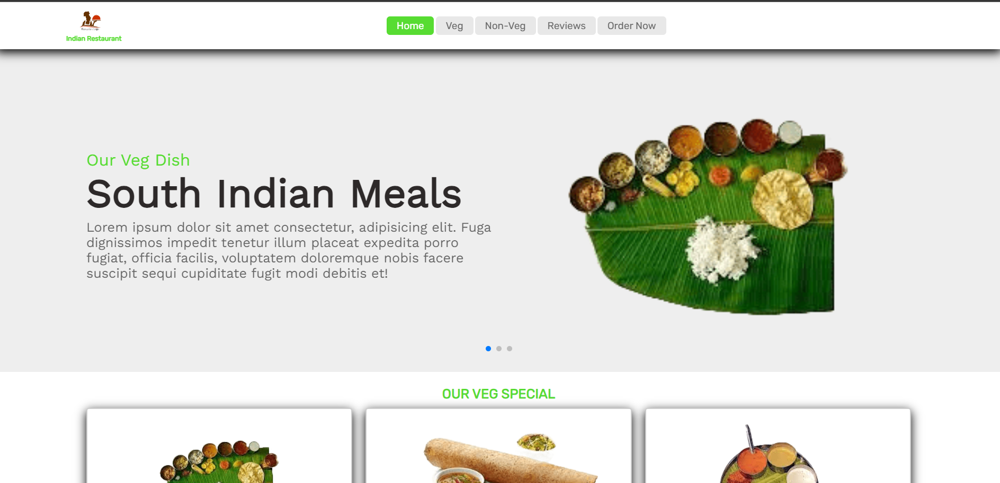
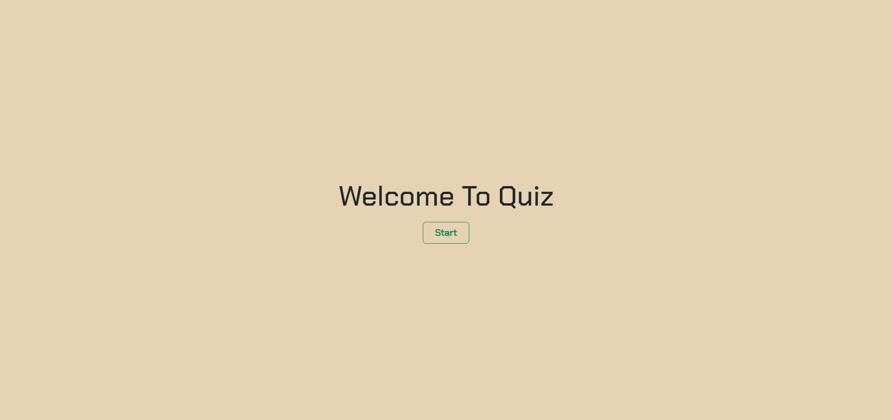
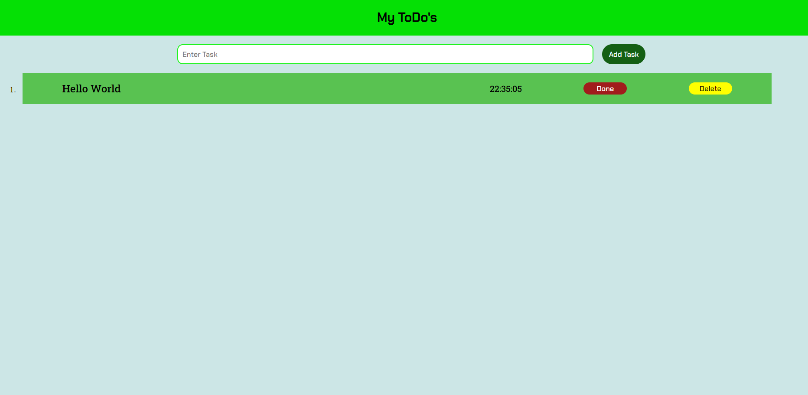
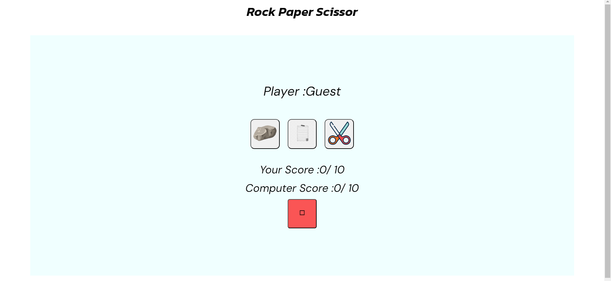
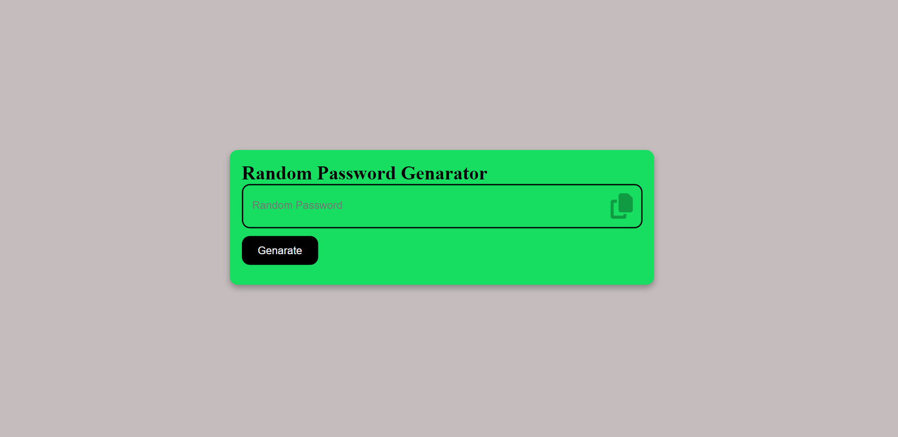

FULL STACK · SIMULATION
Load Balancer Simulator
Interactive load-balancing simulation with Round Robin and Least Connections algorithms, live server updates, and visualized request metrics.
#React#Node.js#Express#Socket.IO

↗
MERN FULL STACK
Agritrade
Agricultural marketplace with real-time auction bidding. Integrated Razorpay payments and WebSocket connections — final-year college project.
#WebSocket
#Razorpay
#MongoDB
#React
#Node.js

↗
MERN FULL STACK
MERN E-Commerce
Full e-commerce website with Razorpay payment gateway. Bootstrap-styled storefront backed by a Node/Express REST API. (Gateway not live — API key not included.)
#Razorpay
#React
#Bootstrap
#MongoDB

↗
MERN FULL STACK
MERN Chat App
Real-time messaging application using Socket.io for live message transfer, MongoDB for persistence, and a Tailwind-styled React frontend.
#Socket.io
#React
#Tailwind
#MongoDB

↗
FULL STACK
YT Downloader
YouTube content downloader powered by yt-dlp. Node/Express backend handles the API connections and yt-dl package pipeline. Deployed on Vercel.
#Node.js
#Express
#yt-dlp
#npm

↗
FULL STACK (API)
Social Media Downloader
Downloads content from social media platforms using third-party APIs. Node.js backend deployed on Vercel handling API connections.
#Node.js
#Vercel
#API
#Backend

↗
FRONT END
Restaurant Page
Responsive restaurant landing page with a Swiper.js image carousel. Pure HTML, CSS, and Vanilla JS — focused on layout and visual presentation.
#Vanilla JS
#Swiper.js
#CSS
#Frontend

↗
FRONT END
Quiz App
Offline quiz with a countdown timer. Built to practise JavaScript logic and DOM manipulation. Clean UI with score tracking.
#Vanilla JS
#Timer
#CSS
#Frontend

↗
FRONT END
Todo List
Simple but solid todo app using Vanilla JS with localStorage persistence. Tasks survive page refreshes — a classic foundations project.
#Vanilla JS
#localStorage
#CSS
#Frontend

↗
FRONT END
Rock Paper Scissors
Classic game built with Vanilla JS. Plays against the computer with random moves, score tracking, and clean game-state logic.
#Vanilla JS
#Game
#Offline
#Frontend

↗
FRONT END
Password Generator
Generates secure random passwords with configurable length and character sets. Built with Vanilla JS — a fun and practical utility project.
#Vanilla JS
#Security
#CSS
#Frontend